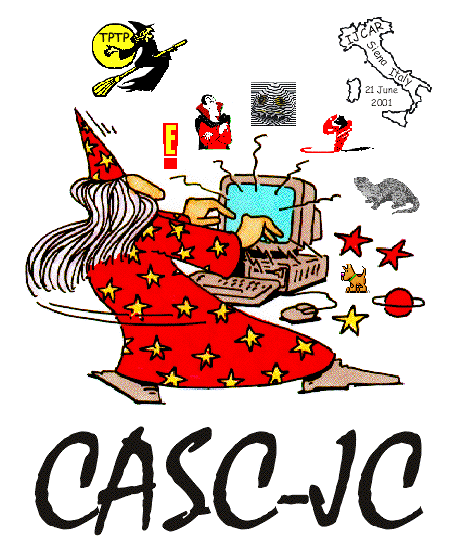

Divisions

Competition Divisions
(inspired by SPCs)
- THF Division:
TH0 theorems
- TFA division:
TF0 theorems with arithmetic
- FOF Division:
FOF non-propositional theorems
- FNT Division:
FOF non-propositional non-theorems (discontinued)
- CNF Division:
CNF non-EPR theorems (discontinued)
- SAT Division:
CNF non-EPR non-theorems (discontinued)
- EPR Division:
Effectively propositional theorems and non-theorems (on hiatus)
- UEQ Division:
Unit equality CNF non-EPR theorems (back from hiatus)
- LTB Division:
FOF non-propositional theorems from large theories, presented in batches
- SLH Division:
TH0 theorems from Sledgehammer
- ICU Division:
Hard problems supplied by entrants
Demonstration Division